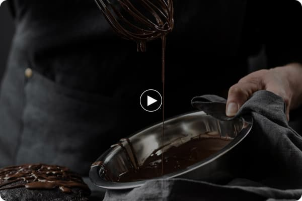

<section class="how-its-made" id="how-its-made">
    <div class="container how-its-made-container">
        <h2 class="how-its-made-heading">How it's <span class="how-its-made-heading-orange">made?</span></h2>
            <div class="flex-container">
                <div class="image-div">
                    
                </div>
                <div class="background-div">
                    <div class="background-container">
                        <h3 class="try-our-chocolates">Try  our chocolates today and discover the perfect balance of flavor</h3>
                        <ul class="how-its-made-list">
                            <li class="how-its-made-list-item">Heat the milk in a saucepan without bringing it to a boil. Add sugar and cocoa powder.</li>
    
                            <li class="how-its-made-list-item">At the same time, prepare a water bath. Melt the butter on it.</li>
    
                            <li class="how-its-made-list-item">"Mix" the milk mixture and already liquid butter. Mix thoroughly with a silicone spatula so that the mass becomes uniform and silky.</li>
    
                            <li class="how-its-made-list-item">Heat the mixture over low heat, letting it barely boil.</li>
    
                            <li class="how-its-made-list-item">Pour the chocolate into special containers (can be replaced with ice molds). Allow to cool and harden.</li>
                        </ul>
                    </div>
                </div>
            </div>

    </div>
</section>